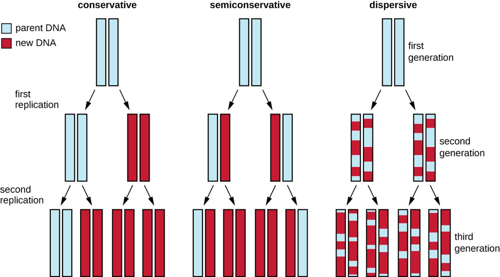
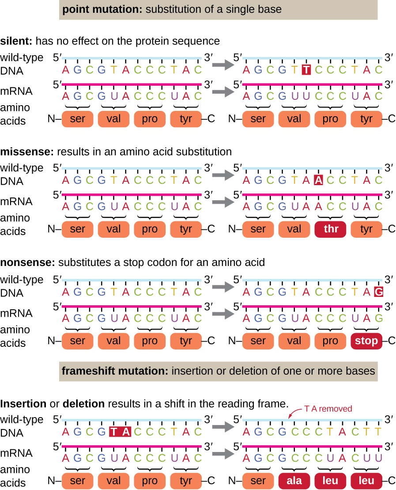
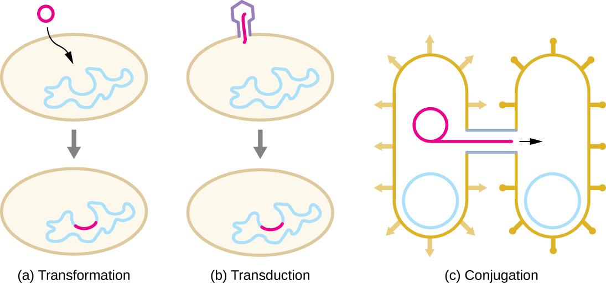
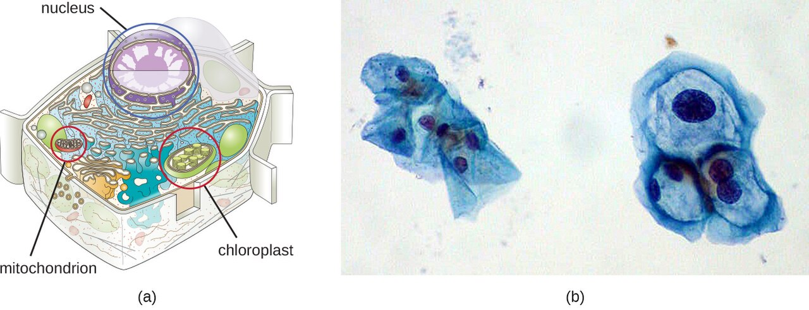
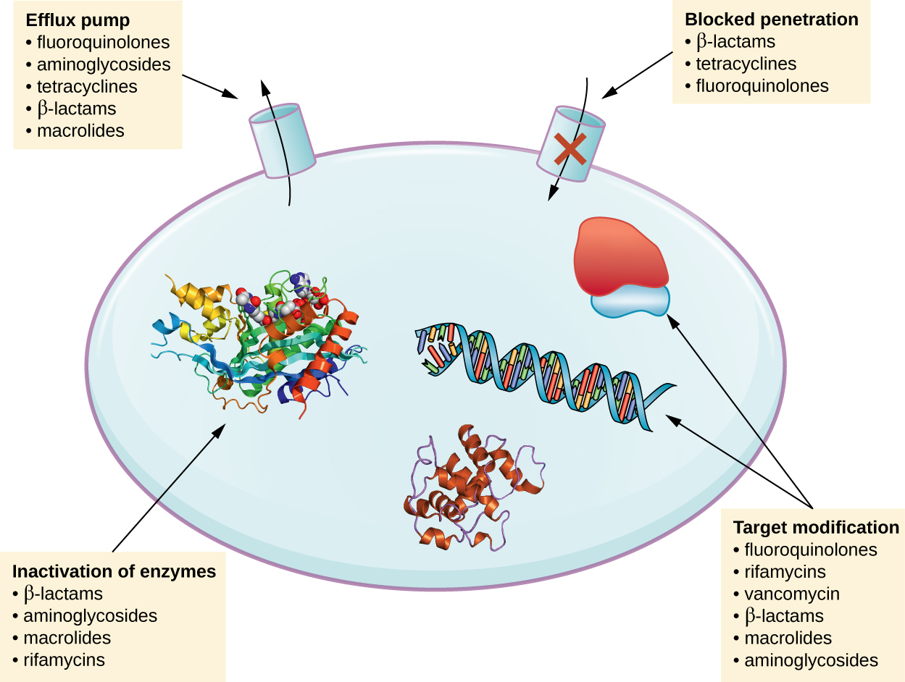

Microbial Genetics & How Resistance Spreads
Every antibiotic-resistant infection you will ever meet at the bedside begins as a change in a microbe's DNA. A single altered gene, copied millions of times overnight, is the difference between a drug that cures and a drug that does nothing. This chapter opens up the genetics behind that story: how bacteria store and use their genetic code, how that code mutates, how bacteria pass useful genes sideways to one another — even across species — and how all of this adds up to the spread of antibiotic resistance through hospitals and communities. Understanding these mechanisms is what turns "finish your antibiotics" from a rule you recite into a rule you can explain.
By the end of this chapter you can
- Describe the structure of DNA and explain how a gene is expressed through the central dogma (replication, transcription, translation).
- Explain why several major antibiotic classes work by targeting replication, transcription, or translation.
- Define mutation and distinguish point mutations (silent, missense, nonsense) from frameshift mutations.
- Identify common mutagens and explain how spontaneous mutation seeds antibiotic resistance.
- Compare transformation, transduction, and conjugation as forms of horizontal gene transfer.
- Explain what plasmids are and how R plasmids carry and spread resistance genes.
- Describe how selective pressure and clinical practice drive the spread of resistance, and state the nurse's role in slowing it.
Section 1DNA, genes & the central dogma

The molecule that runs the cell
Everything a microbe can do — build a cell wall, digest a sugar, resist a drug — is written in its DNA (deoxyribonucleic acid). DNA is a long double-stranded molecule shaped like a twisted ladder, the famous double helix. The rungs of the ladder are pairs of nucleotide bases, and they pair by a strict rule: adenine (A) with thymine (T), and guanine (G) with cytosine (C). Because the pairing is fixed, one strand is always a perfect template for rebuilding the other — a feature that matters enormously when the cell needs to copy itself.
A gene is simply a stretch of DNA that carries the instructions for one product, usually a protein. The complete set of an organism's genetic material is its genome. Most bacteria keep their genome as a single circular chromosome floating in the cytoplasm (they have no nucleus), often alongside small extra loops of DNA called plasmids — the little rings we will meet again in Section 4, because that is exactly where many resistance genes ride.
Copying the code: replication
Before a bacterium divides, it must make a complete second copy of its DNA so each daughter cell gets a full set of instructions. This is DNA replication. The double helix unzips into two single strands, and an enzyme called DNA polymerase reads each old strand and builds a new partner strand across from it, following the A–T, G–C rule. The result is two identical double helices where there was one. Because each new molecule keeps one old strand and one new strand, replication is called semiconservative. Bacteria replicate fast — some divide every 20 minutes — and that speed is the engine behind everything in this chapter: fast copying means fast spreading of any gene, including a resistance gene.
From gene to protein: transcription & translation
Having the instructions is not the same as carrying them out. To use a gene, the cell runs the central dogma: DNA → RNA → protein. First comes transcription, where an enzyme called RNA polymerase reads a gene and writes a working copy of it as a strand of messenger RNA (mRNA). Then comes translation, where a ribosome reads the mRNA three bases at a time — each three-base codon specifying one amino acid — and links amino acids into a protein. The finished protein folds up and goes to work as an enzyme, a structural part, or a pump. Change the DNA and you change the protein; change the protein and you change what the microbe can do.
| Step | Input → output | Key enzyme/machine | Antibiotic that blocks it |
|---|---|---|---|
| Replication | DNA → two identical DNAs | DNA polymerase, DNA gyrase | Fluoroquinolones (block gyrase) |
| Transcription | DNA → mRNA | RNA polymerase | Rifampin (blocks RNA polymerase) |
| Translation | mRNA → protein | Ribosome | Aminoglycosides, tetracyclines, macrolides |
- DNA stores instructions as base pairs (A–T, G–C); a gene codes for one product, and the whole set is the genome.
- Replication copies DNA so each daughter cell gets a full genome; bacteria do this fast.
- The central dogma is DNA → (transcription) → mRNA → (translation) → protein.
- Many antibiotics work by blocking replication, transcription, or translation in bacteria specifically.
Section 2Mutation

What a mutation is
A mutation is any change in the DNA sequence. Most mutations are copying errors: DNA polymerase is remarkably accurate, but it is not perfect, and when a bacterium divides billions of times, rare mistakes are guaranteed. A mutation may do nothing, may harm the microbe, or — occasionally — may hand it a brand-new ability. Whether a mutation matters depends on how it changes the protein a gene builds, which is why the type of mutation is worth knowing.
Types of mutation
The simplest change is a point mutation, where a single base is swapped for another. Its consequences vary. A silent mutation changes a codon but still codes for the same amino acid, so the protein is unchanged. A missense mutation changes one amino acid, which may subtly or seriously alter the protein — this is the classic route to a drug target that no longer binds its drug. A nonsense mutation turns an amino-acid codon into a "stop" signal, cutting the protein short and usually breaking it.
More disruptive is the frameshift mutation, where a base is inserted or deleted. Because the ribosome reads mRNA in fixed groups of three, adding or removing one base shifts the entire reading frame downstream, garbling every codon after the change. Frameshifts almost always destroy the protein completely.
Mutagens
Mutations that happen on their own during replication are spontaneous. Their rate rises sharply in the presence of a mutagen — an agent that damages DNA or causes copying errors. Chemical mutagens include certain reactive molecules and base analogs that slip into DNA in place of a normal base. Radiation is a powerful physical mutagen: ultraviolet (UV) light fuses adjacent thymine bases into thymine dimers that distort the helix, while X-rays and gamma rays break strands outright. This is also why UV light and ionizing radiation are used to sterilize — the same DNA damage that causes mutations, at high enough doses, simply kills the cell.
| Mutation | What changes | Effect on protein |
|---|---|---|
| Silent (point) | One base; codon still means the same amino acid | None |
| Missense (point) | One base; codon now means a different amino acid | One amino acid changed — may alter function (e.g., a drug target) |
| Nonsense (point) | One base; codon becomes a "stop" | Protein cut short — usually nonfunctional |
| Frameshift | Base inserted or deleted | Reading frame shifts — protein usually destroyed |
- A mutation is any change in the DNA sequence; most arise as rare replication errors.
- Point mutations swap one base: silent (no change), missense (one amino acid changed), nonsense (premature stop).
- Frameshift mutations (insertion/deletion) shift the reading frame and usually wreck the protein.
- Mutagens — chemicals, UV, X-rays — raise the mutation rate; spontaneous mutation is the raw material of resistance.
Section 3Horizontal gene transfer

Sideways, not just downward
Mutation is slow and random. If it were the only way bacteria gained new genes, resistance would spread far more gradually than it does. But bacteria have a second, much faster trick: they trade genes sideways. Vertical gene transfer is the ordinary inheritance of genes from a parent cell to its daughters. Horizontal gene transfer (HGT) is the movement of genetic material between separate cells — even between different species — that are not parent and offspring. HGT is why a resistance gene that arose in one organism can turn up months later in an entirely unrelated one. There are three routes.
Transformation, transduction, conjugation
Transformation is the uptake of naked DNA from the environment. When a bacterium dies and breaks apart, it spills its DNA; a nearby "competent" cell can pull those fragments across its membrane and stitch them into its own genome. If the fragment carried a resistance gene, the recipient is now resistant — without ever meeting the original owner alive.
Transduction uses a bacterial virus (a bacteriophage) as an accidental delivery truck. When a phage infects a bacterium and assembles new virus particles, it sometimes packages a piece of the host's DNA by mistake. When that phage goes on to infect another bacterium, it injects the stray host gene along with itself, and the new host may keep it.
Conjugation is the most efficient of the three and the one that matters most for resistance. Two bacteria connect through a bridge called a sex pilus, and a copy of a plasmid — often an entire packet of resistance genes — is passed from donor to recipient. It is the closest thing bacteria have to direct sharing, and it can move genes between species that would otherwise never mix.
| Mechanism | How DNA moves | Vehicle | Clinical relevance |
|---|---|---|---|
| Transformation | Cell takes up free DNA from a dead microbe | Naked environmental DNA | Spreads genes released by lysed bacteria |
| Transduction | A virus carries bacterial DNA to a new cell | Bacteriophage | Moves genes, including some toxins & resistance |
| Conjugation | Direct cell-to-cell transfer through a pilus | Sex pilus + plasmid | Major driver of multidrug-resistance spread |
- Vertical transfer is parent-to-daughter inheritance; horizontal gene transfer (HGT) moves genes between separate cells, even across species.
- Transformation = uptake of free DNA; transduction = delivery by a bacteriophage; conjugation = direct transfer via a pilus.
- Conjugation is the biggest driver of multidrug-resistance spread because it moves whole plasmids of genes at once.
- HGT lets resistance jump between unrelated organisms far faster than mutation alone.
Section 4Plasmids & resistance genes

Little rings of optional DNA
Besides its main chromosome, a bacterium often carries one or more plasmids — small, circular loops of DNA that sit apart from the chromosome (they are extrachromosomal). Plasmids are copied by the cell and passed to daughter cells, but they are not strictly required for survival. Instead they carry "bonus" genes that come in handy under stress: genes for using an unusual nutrient, for producing a toxin, or — the ones that keep infection-control nurses up at night — genes for surviving antibiotics.
R plasmids: resistance to go
A plasmid that carries one or more antibiotic-resistance genes is called a resistance plasmid, or R plasmid. R plasmids are dangerous for two reasons. First, a single plasmid can carry resistance genes to several different antibiotics at once, so acquiring it in one step makes a bacterium multidrug-resistant (MDR). Second, R plasmids often carry their own conjugation machinery, so they are built to copy themselves into neighboring cells. Put those two facts together and you have a mobile, self-spreading package of multidrug resistance — a major reason resistant organisms like VRE and the multidrug-resistant gram-negatives are behind so many hospital outbreaks. (Not every resistant organism works this way: in MRSA, for instance, the key methicillin-resistance gene sits on the chromosome, not a plasmid.)
Jumping genes that build the package
How does a plasmid come to hold so many resistance genes? Often through transposons — nicknamed "jumping genes" — short DNA segments that can cut or copy themselves from one location and paste into another, including from a chromosome onto a plasmid. Related elements called integrons can capture resistance gene "cassettes" and line them up together. Over time these shuffling elements assemble multidrug-resistance plasmids gene by gene, ready to be shared by conjugation.
| Feature | Chromosome | Plasmid |
|---|---|---|
| Size | Large; the main genome | Small loop of extra DNA |
| Essential? | Yes — carries the genes for survival | No — carries optional/"situational" genes |
| Copied & inherited? | Yes, with each division | Yes, and can also be shared by conjugation |
| Typical cargo | Core metabolism, structure | Resistance, toxins, special nutrients |
- Plasmids are small, circular, extrachromosomal loops of DNA that carry optional but useful genes.
- R plasmids carry antibiotic-resistance genes, often to several drugs at once (multidrug resistance).
- R plasmids frequently carry conjugation machinery, so they copy themselves into neighboring cells.
- Transposons and integrons shuffle resistance genes onto plasmids, building the multidrug package.
Section 5How resistance spreads

Selective pressure: the drug does the choosing
Antibiotics do not create resistance — they select for it. Picture a population of bacteria in which, by chance, a few cells already carry a resistance gene (from mutation or from a plasmid). Give an antibiotic and the susceptible cells die, but the resistant few survive and multiply, quickly repopulating the site with an all-resistant community. This is selective pressure: the drug clears the field for exactly the organisms it cannot kill. Every dose of antibiotic anywhere — appropriate or not — nudges the microbial world a little further toward resistance, which is why unnecessary antibiotic use is not a harmless "just in case."
Where the spreading happens
Resistant organisms spread the same way any microbe spreads — mostly by contact, and in healthcare that means hands, equipment, and surfaces moving flora from patient to patient. Several forces accelerate it: overprescribing and prescribing antibiotics for viral illnesses; patients stopping a course early, which kills the weak and leaves the tough survivors behind; heavy antibiotic use in agriculture, which seeds resistant organisms into the food supply and environment; and international travel, which carries resistant strains around the globe in days. The genetics from the earlier sections is what makes each of these routes so potent: once a resistance gene exists on a mobile plasmid, contact spread and conjugation do the rest.
The nurse at the center of it
Slowing resistance is not mainly a laboratory problem — it is a bedside one, and the nurse sits at the center. Hand hygiene and contact precautions stop resistant organisms from moving between patients. Antimicrobial stewardship — questioning whether an antibiotic is truly needed, pushing for cultures before starting drugs, narrowing broad-spectrum therapy once the organism is known, and stopping antibiotics that are no longer indicated — reduces the selective pressure in the first place. And patient teaching that explains why to finish the full course, why leftover antibiotics should never be shared, and why a cold will not respond to antibiotics turns the patient into a partner rather than a driver of the problem.
| Driver of spread | What happens | Nursing countermeasure |
|---|---|---|
| Contact transmission | Resistant flora ride hands, equipment, surfaces between patients | Hand hygiene; contact precautions; dedicated equipment |
| Overprescribing | Antibiotics given when not needed (e.g., for viruses) select for resistance | Stewardship; culture first; question the indication |
| Incomplete courses | Stopping early leaves the toughest survivors to repopulate | Teach adherence; explain the "why" |
| Broad-spectrum overuse | Wide kill flattens flora and selects widely for resistance | De-escalate to a narrow agent once the organism is known |
- Selective pressure: antibiotics do not create resistance, they select for the few cells that already have it, then those cells take over.
- Resistance spreads mainly by contact, amplified by overprescribing, incomplete courses, agricultural use, and travel.
- The genetics of Sections 1–4 (mutation, HGT, R plasmids) is what makes each route so fast.
- Hand hygiene, contact precautions, stewardship, and patient teaching are the nurse's levers against resistance.
The chapter in one breath
- DNA stores a microbe's instructions as base pairs; a gene is expressed through the central dogma — DNA replicated, transcribed to mRNA, translated to protein.
- Several antibiotic classes work by blocking replication, transcription, or translation in bacteria specifically.
- A mutation changes the DNA sequence; point mutations (silent, missense, nonsense) swap one base, frameshifts shift the reading frame, and mutagens raise the rate.
- Spontaneous mutation seeds resistance, which is why serious infections like TB are treated with multiple drugs at once.
- Horizontal gene transfer — transformation, transduction, conjugation — moves genes sideways between cells, even across species.
- R plasmids are mobile loops of DNA carrying resistance to several drugs at once, spread efficiently by conjugation.
- Selective pressure from antibiotic use plus contact spread drives resistance through healthcare and the community; hand hygiene, stewardship, and teaching are the nurse's countermeasures.
ReferenceWords worth knowing
A quick reference for the terms in this chapter — skim it now, or circle back whenever a word trips you up.
- Central dogma
- The flow of genetic information in a cell: DNA → RNA → protein (replication, transcription, translation).
- Codon
- A group of three mRNA bases that specifies one amino acid during translation.
- Conjugation
- Horizontal gene transfer by direct cell-to-cell contact through a sex pilus, often moving a plasmid.
- DNA (deoxyribonucleic acid)
- The double-stranded molecule that stores genetic instructions as paired bases (A–T, G–C).
- Frameshift mutation
- A mutation from inserting or deleting a base, which shifts the reading frame and usually destroys the protein.
- Gene
- A stretch of DNA that codes for one product, usually a protein.
- Genome
- The complete set of an organism's genetic material.
- Horizontal gene transfer (HGT)
- Movement of genetic material between separate cells (not parent to offspring), even across species.
- Missense mutation
- A point mutation that changes one amino acid in a protein; may alter its function.
- Mutagen
- A physical or chemical agent (e.g., UV light, X-rays, certain chemicals) that raises the mutation rate.
- Mutation
- Any change in the DNA sequence.
- Nonsense mutation
- A point mutation that turns an amino-acid codon into a stop codon, cutting the protein short.
- Plasmid
- A small, circular, extrachromosomal loop of DNA that carries optional genes and can be shared between cells.
- Point mutation
- A mutation that swaps a single base; may be silent, missense, or nonsense.
- R plasmid (resistance plasmid)
- A plasmid carrying one or more antibiotic-resistance genes, often to several drugs at once.
- Replication
- The copying of DNA before cell division, producing two identical double helices.
- Selective pressure
- The way antibiotic use favors the survival and multiplication of already-resistant cells.
- Transcription
- Copying a gene from DNA into messenger RNA by RNA polymerase.
- Transduction
- Horizontal gene transfer in which a bacteriophage carries bacterial DNA to a new cell.
- Transformation
- Horizontal gene transfer in which a cell takes up free DNA released by a dead microbe.
- Translation
- Building a protein from an mRNA sequence at the ribosome, one codon at a time.
- Transposon
- A "jumping gene" — a DNA segment that can move between locations, including onto plasmids.